家具
我们从家具的结构类型和连接形式等方面展开学习。而在这个过程中，我们将充分结合智能化产品设计开发与创新制造虚拟仿真实践教学实验室，以数字化平台为工具，深入了解家具结构设计的原理与方法。这样的结合不仅有助于我们理论知识的深入学习，还能通过虚拟仿真环境，实际操作并优化设计方案。 通过实验室的支持，我们可以模拟不同家具结构类型的设计，了解各种连接形式对家具整体结构的影响。这种虚拟实践的方式有助于我们更好地理解家具设计的工程性和实用性，提高我们在设计过程中的决策能力。 在实验室中，我们可以运用智能化产品设计的理念，通过数字化手段对不同的结构和连接方案进行模拟分析，实时了解设计的效果。这种数字化的实践不仅提高了学习效率，也培养了我们对新技术的应用能力，使我们更好地适应未来数字化设计与制造的发展趋势。
一.框架结构
框架是框架式家具的基本结构部件，也是框式家具的受力构件，框式家具有一系列的框架构成。最简单的框架由纵横各两根方材通过榫接合而成，有的框架有嵌板，有的嵌玻璃，有的是中空。纵向的方材称“立边”，横向的方材称“帽头”；如果框架中间再加方材，纵向的称"立档"，横向的称"横档"。

二、嵌板结构
嵌板结构是框式家具中常见的结构形式，不仅可以节约珍贵的木材，同时也比整体采用方材拼接稳定，不易变形。将人造板或拼板嵌入木框中间，起封闭与隔离作用的这种结构称为嵌板结构。
三、拼板结构
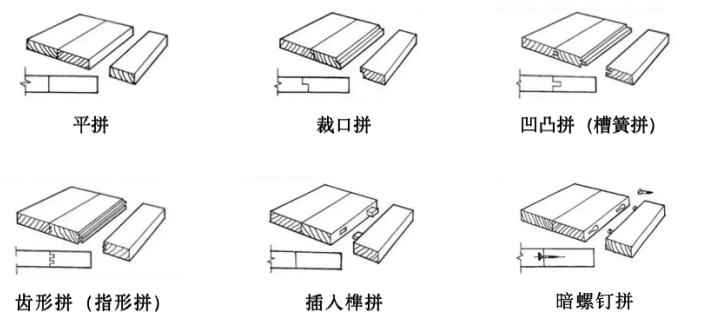
图1
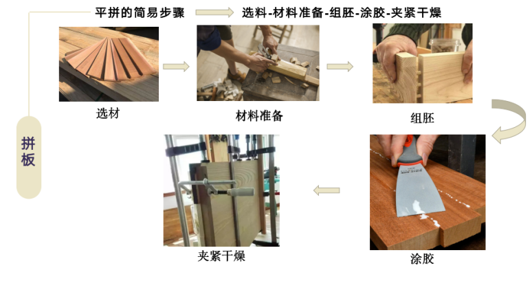
图2
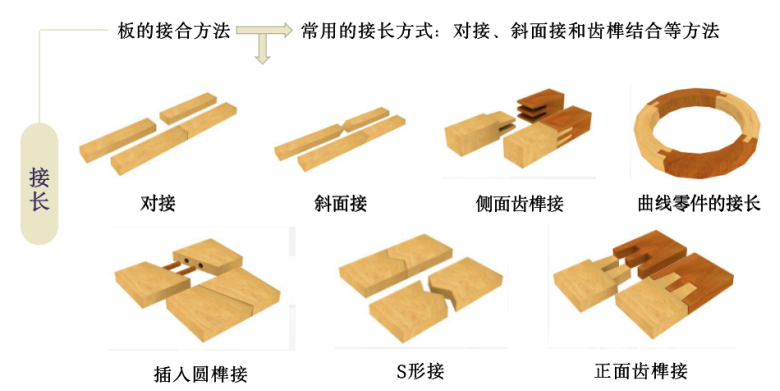
图3
四、箱框结构
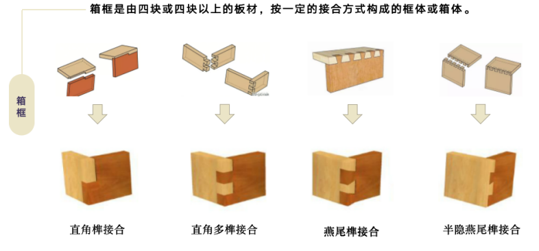
图1
介绍
近期依托实验室拟开展的教学应用
在建设虚拟仿真教学实验室的过程中，我们将充分整合设计原理、技术准备、工艺原理、设备种类等理论知识，并引入虚拟仿真软件和脑电眼动技术软件进行实践操作。学生将通过对智能设计领域的虚拟仿真学习，逐步掌握设计原理和工艺技术。
（1）学生交互性操作步骤说明：
（1）智能化设计。学生熟悉智能化设计方法及流程。学生可以选择一款设计仿真实验，并显示设计三维模型，也可以自主设计。
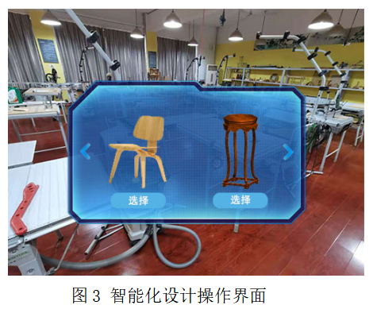
（2）学习结构与生产工艺。熟悉常用材料、各部件连接方式、生产工艺等基本知识。
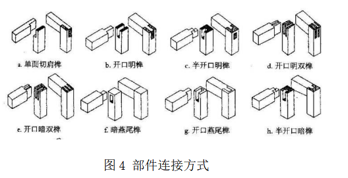
（3）设计与人体尺寸。学习与相关的人体系统、人体动作与产品的关系、人体尺寸，并进行人体尺寸与产品关系的仿真实验。
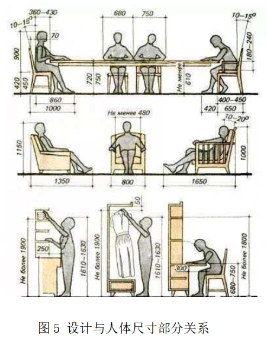（4）设计草图。进行概念草图的设计，将草图内容进行提炼，学习结构草图的绘制方法，明确设计思路。
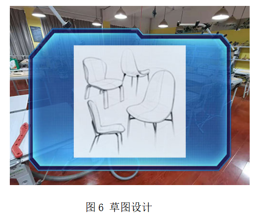（5）计算机绘图。利用rhino、3DMAX等建模软件进行三维效果图的绘制，运用CAD等进行三视图的绘制，细化设计。
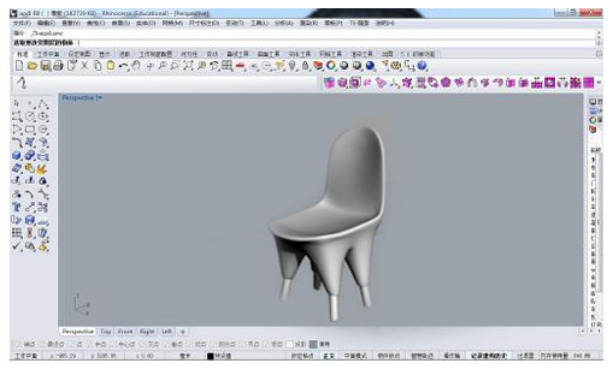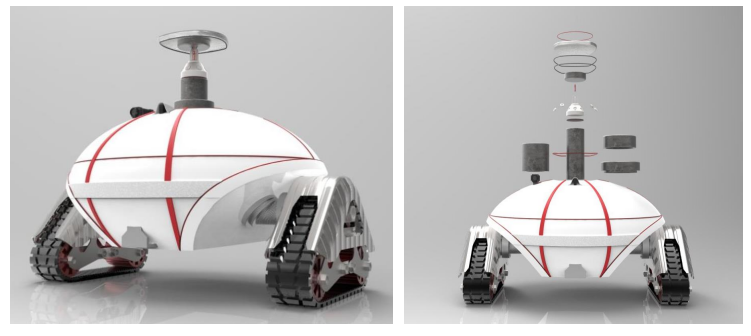
6）制作小模型。制作等比例缩放的小模型，领会小模型制作的意义。
7）选择材料。了解家具制作常用的材料，熟悉这些材料的特点与性能，对材料不同性能进行仿真测试，根据需求进行材料的选择。
8）木材切割。通过学习切割锯和120锯的作用和使用方法，熟悉木材的切割方法，初步尝试进行木材的切割。
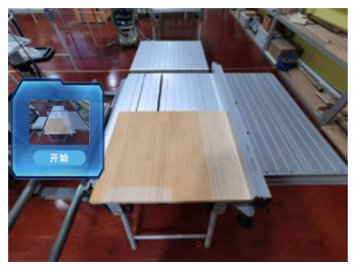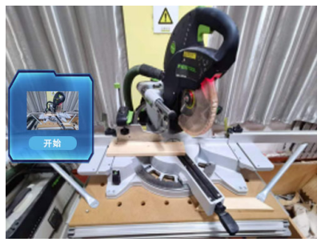
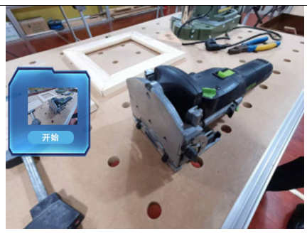
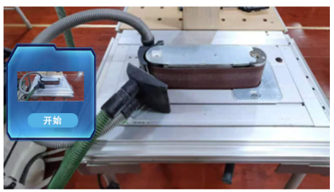